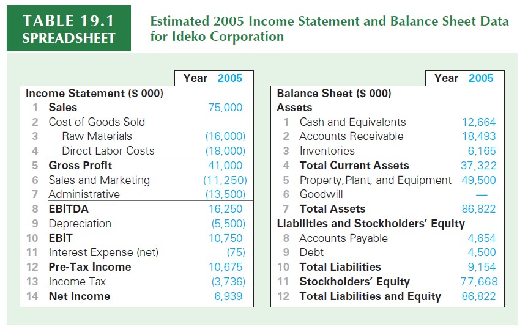
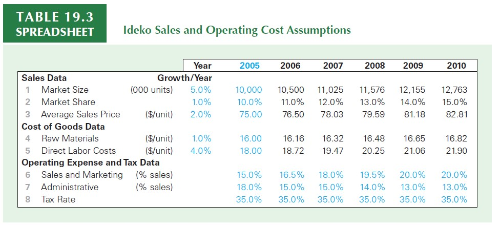
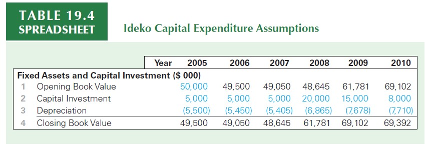
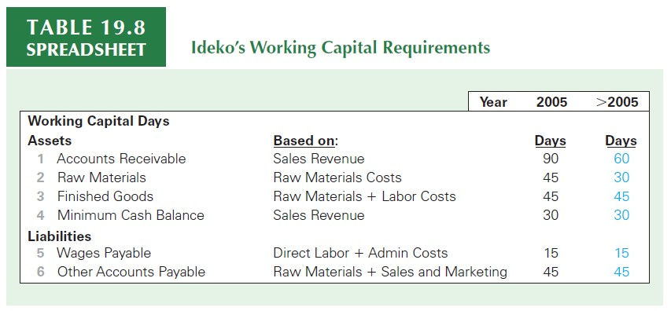
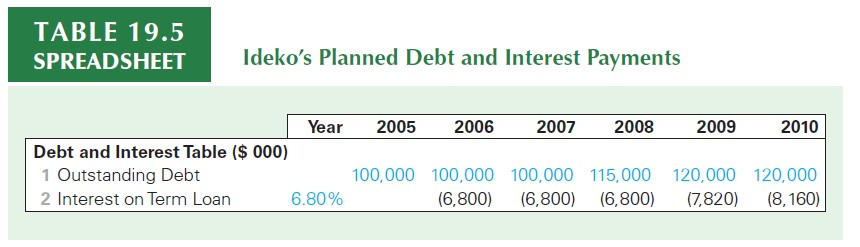
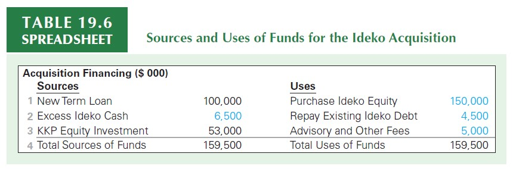
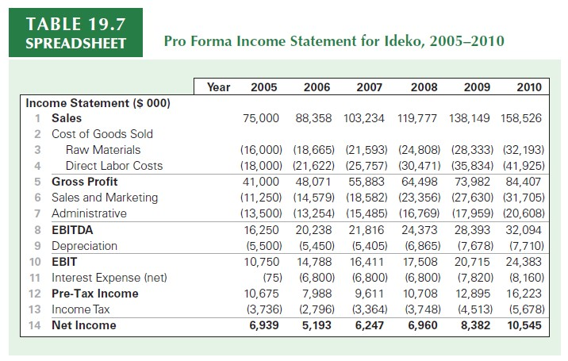
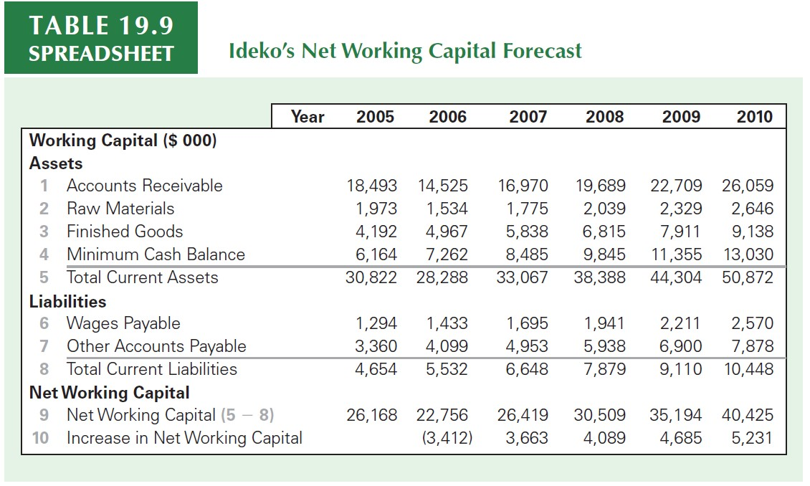
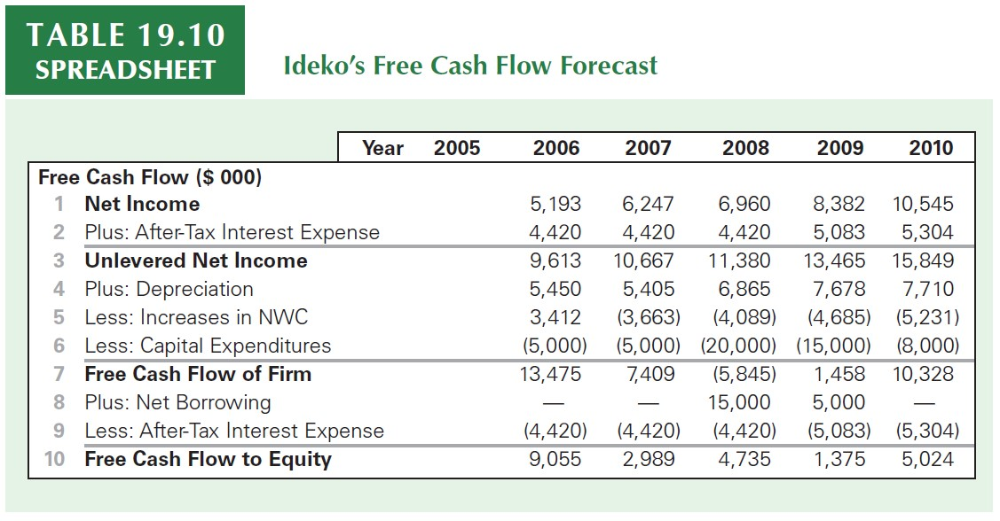

Firm Valuation and Financial Modeling
About this lecture
This lecture aims to walk through a practical application of Valuation and Financial Modeling using the tools that we have developed thus far in the course to evaluate how much a firm is worth
- A Valuation is nothing more than an assessment of a firm (or project)’s value
- Based on the current and past information about the firm, project, and industry, we estimate its future results and evaluate how much it is worth in terms of the current period
- A Valuation is nothing more than an assessment of a firm (or project)’s value
We will closely follow (Berk and DeMarzo 2019), Chapter 19, which presents the valuation case
You can also use these guidelines to value other publicly held companies
Whenever you’re in doubt regarding a specific term, refer to the previous lectures, which will be, in all possible cases, mentioned throughout these slides
An accompaining Microsoft Excel file available on eClass® with all the calculations
About the company
Ideko is a privately held designer and manufacturer of specialty sports eyewear based in Chicago
In mid-2005, its owner and founder, June Wong, has decided to sell the business, after having relinquished management control about four years ago. As a partner in KKP Investments, you are investigating purchasing the company
If a deal can be reached, the acquisition will take place at the end of the current fiscal year. In that event, KKP plans to implement operational and financial improvements at Ideko over the next five years, after which it intends to sell the business
You believe a deal could be struck to purchase Ideko’s equity at the end of this fiscal year for an acquisition price of $150 million, which is almost double Ideko’s current book value of equity. Is this price reasonable?
Step 1: analyzing comparable firms
As you saw in the Financial Analysis lectures (2-4), one of the first steps in assessing a firm’s value is to understand how comparable firms behave in terms of financial indicators
A quick way to gauge the reasonableness of the proposed price for Ideko is to compare it to that of other publicly traded firms using the method of comparable firms (also known as multiples). More specifically, market-valuation multiples rely on the fact that a reasonable estimate for a firm’s value should be a factor of its earnings:
- If the industry-median EV/EBITDA is 3.2x, our firm is valued at…
- If the industry-median EV/Sales is 1.2x, our firm is valued at…
- If the P/E ratio is 15x, our firm is valued at…
\(\rightarrow\) For a more detailed discussion on market-valuation ratios, refer to the Financial Analysis lecture.
Step 1: analyzing comparable firms
| Ratio | Ideko (proposed) | Oakley | Luxxotica | Nike | Sporting Goods |
|---|---|---|---|---|---|
| P/E | 21.6 | 24.8 | 28 | 18.2 | 20.3 |
| EV/Sales | ? | 2 | 2.7 | 1.5 | 1.4 |
| EV/EBITDA | ? | 11.6 | 14.4 | 9.3 | 11.4 |
| EBITDA/Sales | ? | 17% | 18.50% | 15.90% | 21.10% |
For example, at a price of $150 million, which is your first estimate of the acquisition price, Ideko’s price-earnings (P/E) ratio is \(\small 150,000/6,939 \approx 21.6\)
Use the numbers presented in the next slide to calculate the:
- EV/Sales
- EV/EBITDA
- EBITDA/Sales
Step 1: analyzing comparable firms
| Ratio | Ideko (proposed) | Oakley | Luxxotica | Nike | Industry Average |
|---|---|---|---|---|---|
| P/E | 21.6 | 24.8 | 28 | 18.2 | 20.3 |
| EV/Sales | 2 | 2 | 2.7 | 1.5 | 1.4 |
| EV/EBITDA | 9.1 | 11.6 | 14.4 | 9.3 | 11.4 |
| EBITDA/Sales | 21.7% | 17% | 18.50% | 15.90% | 21.10% |
- A quick look at this table reveals that:
- Some multiples vary substantially across firms
- Other multiples are more stable
- Differences may stem from differences in operating performance and other firm-specific characteristics
- How to use these numbers to price Ideko’s shares?
Step 1: analyzing comparable firms
At the proposed price, Ideko’s P/E ratio is low relative to those of Oakley and Luxottica, although it is somewhat above the P/E ratios of Nike and the industry overall. The same can be said for Ideko’s valuation as a multiple of sales
Thus, based on these two measures, Ideko looks “cheap” relative to Oakley and Luxottica, but is priced at a premium relative to Nike and the average sporting goods firm
The deal stands out, however, when you compare Ideko’s enterprise value relative to EBITDA:
- \(\small 9.1\times\) is below that of all of the comparable firms as well as the industry average
- However, \(\small 21.7\%\) EBITDA Margin is higher than all competitors as well as the industry average
Overall, using $150MM as the “correct” price does provide multiple estimates that are not unreasonable. While it provides some reassurance that the acquisition price is reasonable compared to other firms in the industry, these multiples ignore important differences such as the operating efficiency and growth prospects of the firms, as well as they look only at past performance
Step 1: analyzing comparable firms
- For each multiple, we can find the highest and lowest values across all three firms and the industry portfolio. Applying each multiple to the data for Ideko yields the following results:
| Minimum | Maximum | Lower Bound | Upper Bound | |
|---|---|---|---|---|
| P/E | 18.2 | 28 | $126.3 | $194.3 |
| EV/Sales | 1.4 | 2.7 | $107.0 | $204.5 |
| EV/EBITDA | 9.1 | 14.4 | $149.9 | $236.0 |
Step 2: integrating the business plan
While comparables provide a useful starting point, whether this acquisition is a successful investment for KKP depends on Ideko’s post-acquisition performance:
If the business plan for the years ahead is substantially different from past performance, then the multiple comparisons may neglect important aspects that should be included in the pricing of the security!
Thus, it is necessary to look in detail at Ideko’s operations, investments, and capital structure, and to assess its potential for improvements and future growth.
All in all, on the operational side, you are quite optimistic regarding the company’s prospects
In the next set of slides, you’ll see some numbers from Ideko’s estimated balance-sheet and income statement data as of 2005, as well as some operating forecasts that will be the basis for building the financial model
Balance Sheet and Income Statement

\(\rightarrow\) You can find the hardcoded numbers in the accompaining Microsoft Excel file
Income and Cost Estimates

\(\rightarrow\) You can find the hardcoded numbers in the accompaining Microsoft Excel file
- The market is expected to grow by 5% per year as the company produces a superior product
- KKP plans to cut administrative costs immediately and redirect resources to new product development, sales, and marketing, which will enable increasing market share from 10% to 15% over the next five years
Capital Expenditures

\(\rightarrow\) You can find the hardcoded numbers in the accompaining Microsoft Excel file
The increased sales demand can be met in the short run using the existing production lines by increasing overtime and running some weekend shifts.
However, once the growth in volume exceeds 50%, Ideko will definitely need to undertake a major expansion to increase its manufacturing capacity.
Working Capital Requirements

\(\rightarrow\) You can find the hardcoded numbers in the accompaining Microsoft Excel file
Actual Credit Policy: 90 days. The standard for the industry is 60 days, and you believe that Ideko can tighten its credit policy to achieve this goal without sacrificing many sales
While maintaining a certain amount of inventory is necessary to avoid production stoppages, you believe that, with tighter controls of the production process, 30 days’ worth of inventory will be adequate
Planned Debt and Interest Payments

\(\rightarrow\) You can find the hardcoded numbers in the accompaining Microsoft Excel file
You plan to greatly increase the firm’s debt, and have obtained bank commitments for loans of $100 million should an agreement be reached
These term loans will have an interest rate of 6.8%, and Ideko will pay interest only during the next five years.
You can compute interest expenses by \(r_d \times D_{t-1}\)
Sources and Uses of Funds

\(\rightarrow\) You can find the hardcoded numbers in the accompaining Microsoft Excel file
- In addition to the $150 million purchase price for Ideko’s equity, $4.5 million will be used to repay Ideko’s existing debt.
- With $5 million in advisory and other fees associated with the transaction, the acquisition will require $159.5 million in total funds
- Required Equity: \(159.5-100-6.5=53,000\)
Step 2: Building the Financial Model
- The value of any investment opportunity arises from the future cash flows it will generate
- With the past information in mind, you begin to forecast Ideko’s future earnings
- To convert this to cash flows, you will also consider Ideko’s working capital and investment needs
Step 2: The pro-forma income statement
We can forecast Ideko’s income statement for the five years following the acquisition based on the operational and capital structure changes proposed
This income statement is often referred to as a pro-forma income statement, because it is not based on actual data but rather depicts the firm’s financials under a given set of hypothetical assumptions
The pro-forma income statement translates our expectations regarding the operational improvements KKP can achieve at Ideko into consequences for the firm’s earnings.
Start from the sales forecast using your inputs for market size, market-share, and unit prices:
\[ \small Sales_t=\text{Market Size}_t\times \text{Market Share}_t \text{Unit Price}_t \]
Step 2: The pro-forma income statement
- You can use a similar rationale to project COGS, and use the estimated ratios (in terms of sales) to deduct all other operating costs
- You can plug in interest expenses and taxes based on the assumptions discussed before
- You should be able to have your pro-forma income statement like below:

Step 3: Working Capital Needs
- Based on these working capital requirements, you can forecast Ideko’s net working capital (NWC) over the next five years. For example, for Accounts Receivable:
\[ \small \text{Accounts Receivable}= \text{Days Required}\times \dfrac{Annual Sales}{365}\rightarrow 60 \times \dfrac{88,358}{365}\approx 14.525 \]
- You can then use the same rationale to project all other working capital requirements across the years, always looking at the yearly forecasts for sales and costs. Finally, you can use the net operating working capital formula to derive the investments needed each year:
\[ \small \Delta NWC_{t} = NWC_{t}-NWC_{t-1} \] With \(NWC_{t}\) defined as Current Operating Assets minus Current Operating Liabilities
Step 3: Working Capital Needs
- Using the estimates described before, you should be able to find:

Step 4: Forecasting the Free Cash Flow
We now have the data needed to forecast Ideko’s free cash flows over the next five years:
- Earnings have been estimated in the pro-forma income statement
- You have estimated working capital requirements
- Interest expenses are a byproduct of the interest rate for the loan and the loan size each year
- Depreciation has been estimated by the tax department
- Capital Expenditures are available
You can combine these items to form the Free Cash Flow estimates:
\[ \small FCF_{t}=EBIT_t\times(1-\text{Tax Rate}_t)+\text{Depreciation}_t\pm \Delta NWC_t \pm CAPEX_t \]
\(\rightarrow\) For a detailed discussion on Free Cash Flow, refer to the Fundamentals of Capital Budgeting lecture.
Step 4: Forecasting the Free Cash Flow

Step 4: Valuing the Investment
You now have the free cash flow estimates, both at the firm level (FCF) and at the equity (FCFE) level
As you saw in Valuation with Leverage lecture, you will now have to evaluate these cash flow streams according to one of the methods (WACC, APV, or FTE)
To value KKP’s investment in Ideko, we need to assess the risk associated with Ideko and estimate an appropriate cost of capital
Because Ideko is a private firm, we cannot use its own past returns to evaluate its risk, but must instead rely on comparable publicly traded firms. In this stage, we will use data from the comparable firms identified earlier to estimate a cost of capital for Ideko:
Step 5: Estimating the Cost of Capital
- Based on Oakley, Luxxotica, and Nike, we estimate the firms’ cost of capital using the CAPM:
\[ R_U=R_f + \beta_U\times(E[R_{mkt}-R_f]) \] where \(\small R_f\) is the risk-free market return (in this case, 4%), \(\small R_{mkt}\) is the return on the market portfolio, assumed to be 9% in this case.
- If we are using the CAPM, finding \(\beta_U\) is the same approach as of finding \(R^U\):
\[ \beta_U= \text{% of Equity} \times \beta_E + \text{% of Debt} \times \beta_D \]
- Based on the three comparable firms, we set \(\beta_U=1.2\) and then \(R_U\) is:
\[ R_U=4\%+1.20\times 5\% = 10\% \]
Step 6: Valuing the Investment
- We can apply several techniques to value the investment:
- We can use a multiple (calculated in Step 1) and apply it to the forecasted numbers from Ideko
- Because We can use the APV Method, knowing that because the debt is paid on a fixed schedule during the forecast period, the APV method is the easiest valuation method to apply
- In what follows, we’ll apply each one of these techniques to assess the firm value
\(\rightarrow\) See the accompanying Excel file for the numeric calculations
Step 6: Valuing the Investment: Multiples
Practitioners generally estimate a firm’s continuation value (also called the terminal value) at the end of the forecast horizon using a valuation multiple. While forecasting cash flows explicitly is useful in capturing those specific aspects of a company, in the long run firms in the same industry typically have similar expected growth rates, profitability, and risk
Thus, applying a multiple is potentially as reliable as estimating the value based on an explicit forecast of distant cash flows
In most settings, the EBITDA multiple is more reliable than sales or earnings multiples because it accounts for the firm’s operating efficiency and is not affected by leverage differences between firms
\[ \small V^L=\text{Forecasted EBITDA}\times\text{EBITDA Multiple} \]
\(\rightarrow\) See the accompanying Excel file for the numeric calculations
A reality check
Does our estimate make sense? Our estimate for Ideko’s initial enterprise value is $213 million, with an equity value of $113 million
As KKP’s initial cost to acquire Ideko’s equity is $53 million, based on these estimates, the deal looks attractive, with an NPV of 113- 53 = 60 million
Does an initial enterprise value of $213 million for Ideko seem reasonable compared to the values of other firms in the industry?
Here again, multiples are helpful. Let’s compute the initial valuation multiples that would be implied by our estimated enterprise value of $213 million and compare them to Ideko’s closest competitors
\(\rightarrow\) See the accompanying Excel file for the numeric calculations
References